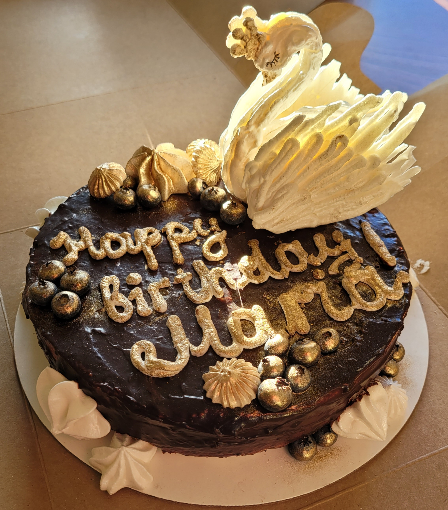

Meringue Swan

Ingrediets:
- egg white 100 g
- granulated sugar 200 g
- lemon juice 0.5 tsp
Direction:
- First of all, you need to carefully separate the protein from the yolk, since we only need proteins. To do this, beat the egg approximately in the middle in half and pouring the yolk into one or the other half, pour the protein into the prepared container. Very important! The container in which you pour the protein should be clean and dry. Add a pinch of salt to the proteins. After that, you need to beat the whites into a strong foam with a mixer so that even turning the bowl over, the protein does not spill out.
- After that, you need to gradually add sugar, continuing to beat. The result should be a very thick mixture (if you run a fork over it, traces will remain). Preheat the oven to 305F (no more, otherwise the meringue will darken). Spread parchment paper, put a tablespoon of meringue. Bake meringues for 1.5–2 hours (if 1.5, then they will be viscous inside; if 2, then they will be drier).